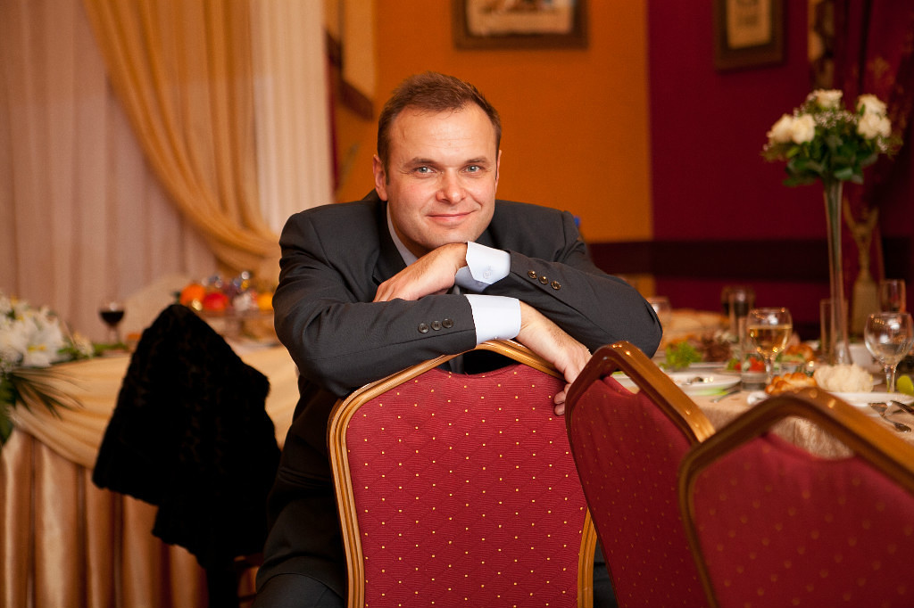

Aleksandr Maslovski
My Curriculum Vitae
This is my real Photo, but i'm youger in it and still not wearing glasses ;)
This picture will be my Avatar
My Contacts
- Phone: +375 29 673 39 42 (A1), +375 29 741 24 80 (MTC)
- Minsk Belarus
- Email: mcalister1972@gmail.com
- Discord: McAlister(mcalister1972)#5615
- GitHub: McAlister1972
- Telegram: @Alex McAlister
Summary
My name is Aleksandr Maslovski. I'm from Belarus. I'm 50 years old. From the time of study, I became very friendly with computers, as it turned out for the rest of my life. At the same time, the first attempts to write code were made. Until recently, the program "Engine Traction Calculation" worked in my native university, in the writing of which I, as a student, took part (Turbo Pascal v.5.5, v.6.0 from Borland, later completed in Delphi). In recent years (from 08.2005 to 09.2021) I worked at my own service center as a software and hardware repair engineer for all kinds of electronics in Gorki city, Mogilev region (complex household appliances, computers, laptops, mobile phones, tablets, cameras, ...). The enterprise was liquidated on 09.21. I decided to retrain and moved to Minsk, I was hired as an electrical engineer in one of the structural divisions of the National Academy of Sciences of the Republic of Belarus. I do self-training. I perfectly understand and realize that a lot has changed since the "first attempt at writing". But there is, in my opinion, sufficient knowledge and experience in working with a PC and various operating systems, a desire to learn and master something new (maybe not the first time)), diligence, sense of purpose, responsibility, time. I like to learn programming. I want to become an Front End Development softwere engineer.
Skills
I'm still learning.
Code
My code's example from Codewars Kata 8 kyu Multiply
function multiply(a, b){
return a * b;
}
Courses
I'm learning at The Rolling Scopes School now.
Projects
I took part in RSSchool projects such as MyCV, Travel and other
Education
I studied at the Belorussian State Agricultural Academy and graduated from it in 1994.
I have higher education. My specialty is Mechanical Engineer
Language
Russian - native. English - A1.